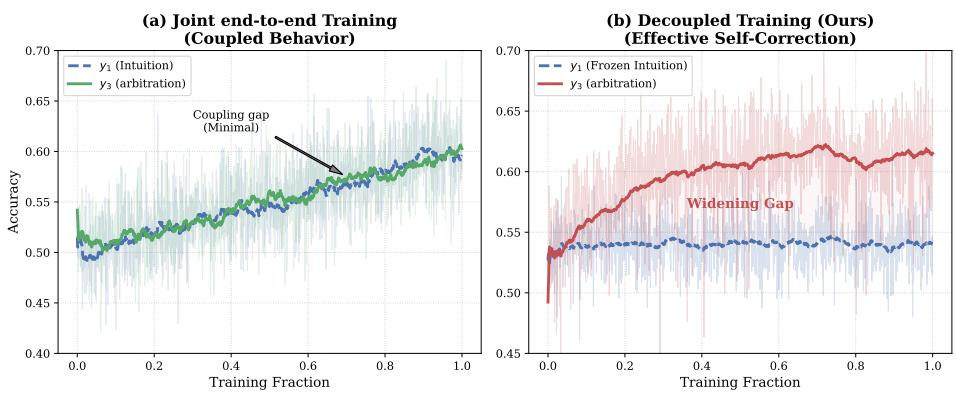

Figureure 1 · : Comparison between Internal Closed-Loop Reflection and Evidence-DrivFig. 1: Comparison between Internal Closed-Loop Reflection and Evidence-Driven Reflection. (a) Traditional closed-loop reflection relies solely on internal parametric knowledge, easily falling into the trap of blind confidence and failing to correct errors. (b) Reflect-R1 completely breaks the hallucination loop by formalizing an “intuition-verification-arbitration” pipeline, executing active searches to achieve genuine self-correction strictly grounded in objective retrieved evidence.这张图概括 Reflect-R1 的整体方法流程。阅读时先看模块之间传递的训练信号，再看作者如何把目标拆成可优化的子问题。

Figureure 3 · : Decoupled training prevents policy couplingFig. 3: Decoupled training prevents policy coupling. (a) Joint end-to-end training collapses reflection into a trivial identity mapping of the initial intuition. (b) Our decoupled strategy stabilizes the preceding distribution, enabling the model to learn robust error-correction logic and achieve a widening performance gap.这张图/表用于判断 Reflect-R1 的实验收益来自哪里。重点看替换、消融或跨模型设置下趋势是否一致，而不是只看单个最高分。
核心问题
对视频自监督/多模态预训练的启发是把中间视觉证据检索显式纳入训练，而不只优化最终答案。
方法拆解
将 long video understanding 拆成 intuition、verification、arbitration；通过多次 temporal search 检索视觉证据，并用 stage-decoupled GRPO 分开训练不同阶段。